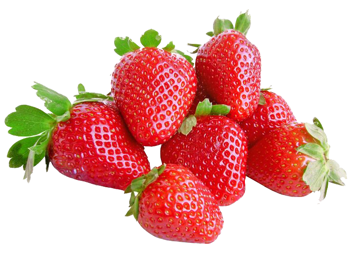
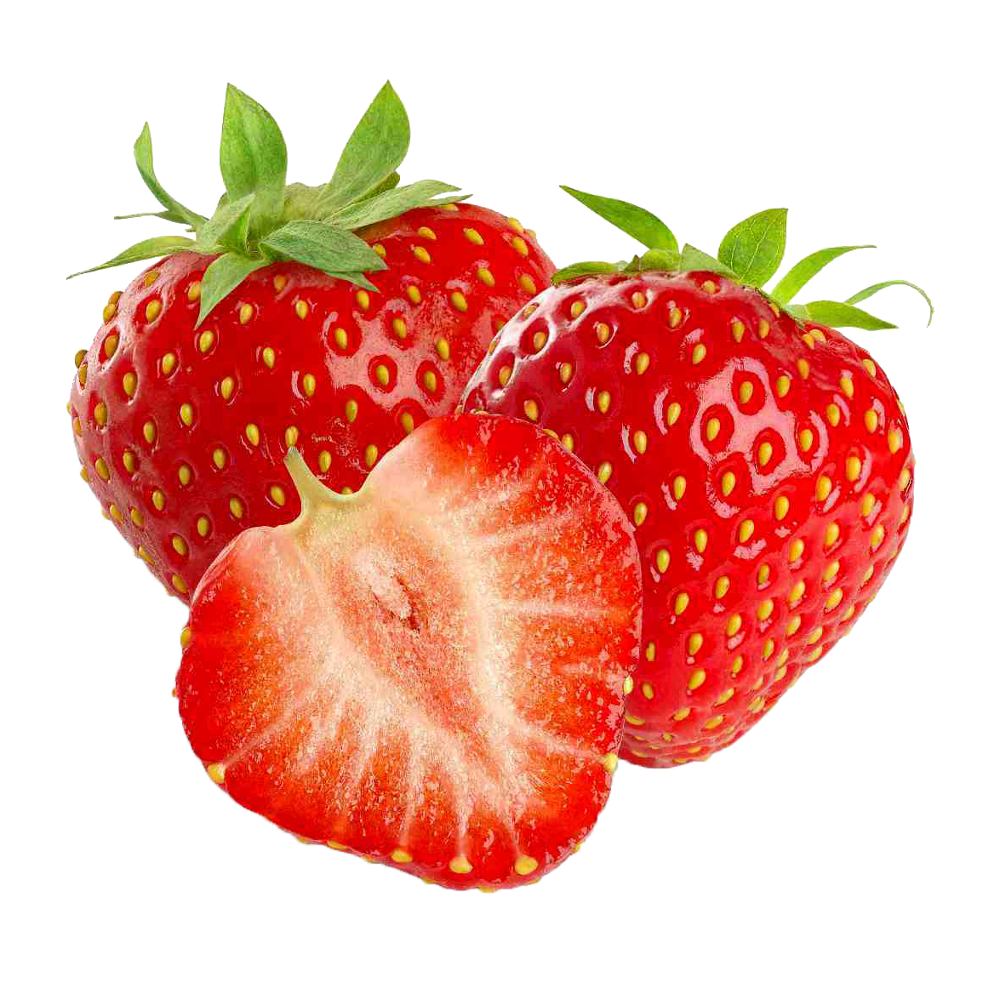
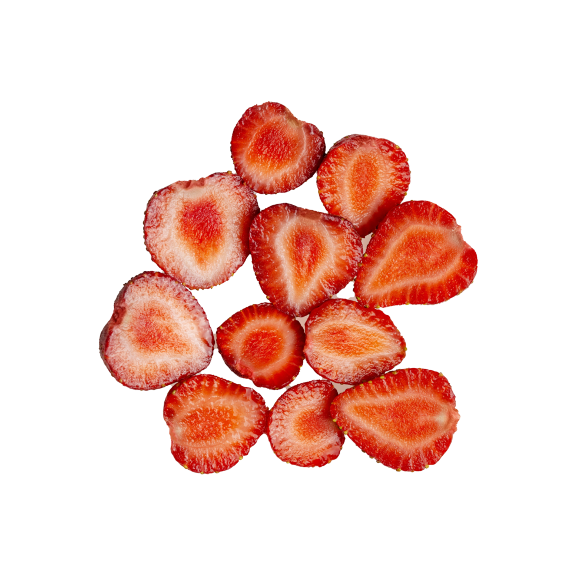

A banana é uma fruta tropical amplamente consumida em todo o mundo. Rica em nutrientes, como potássio, fibras e vitaminas, a banana é conhecida por seu sabor doce e textura macia. Ela pode ser consumida fresca, em smoothies, sobremesas e até mesmo em pratos salgados. Além de ser deliciosa, a banana oferece diversos benefícios à saúde, incluindo a melhora da digestão, o fornecimento de energia rápida e o auxílio na regulação da pressão arterial.
As bananas são cultivadas em muitas regiões tropicais e subtropicais, com variedades que diferem em tamanho, cor e sabor. A banana é uma fruta versátil que pode ser apreciada de várias maneiras, seja como um lanche rápido, um ingrediente em receitas ou até mesmo como um componente em produtos de beleza caseiros.
Além de seu valor nutricional, a banana também desempenha um papel importante na economia de muitos países produtores, sendo uma das frutas mais exportadas globalmente. Com sua popularidade crescente, a banana continua a ser uma escolha favorita para pessoas de todas as idades ao redor do mundo.
Em resumo, a banana é uma fruta deliciosa e nutritiva que oferece uma variedade de benefícios à saúde e pode ser apreciada de diversas formas. Seja consumida fresca ou incorporada em receitas, a banana é uma escolha saborosa e saudável para qualquer dieta.

A banana tem uma história rica e fascinante que remonta a milhares de anos. Acredita-se que a banana tenha se originado na região do sudeste asiático, especificamente na área que hoje compreende a Malásia, Indonésia e Filipinas. As primeiras evidências arqueológicas sugerem que as bananas foram cultivadas por volta de 5000 a.C.
As bananas foram introduzidas na África por volta de 2000 a.C., onde se tornaram uma importante fonte de alimento para muitas comunidades. A partir da África, as bananas foram levadas para a Europa e o Mediterrâneo pelos comerciantes árabes durante a Idade Média. No entanto, foi somente no século XV, com as explorações portuguesas, que as bananas foram introduzidas nas Américas.
Hoje, a banana é cultivada em muitas regiões tropicais e subtropicais ao redor do mundo, sendo uma das frutas mais consumidas globalmente. A banana desempenha um papel importante na economia de muitos países produtores, especialmente na América Latina, África e Ásia. Com sua popularidade crescente, a banana continua a ser uma escolha favorita para pessoas de todas as idades ao redor do mundo.
